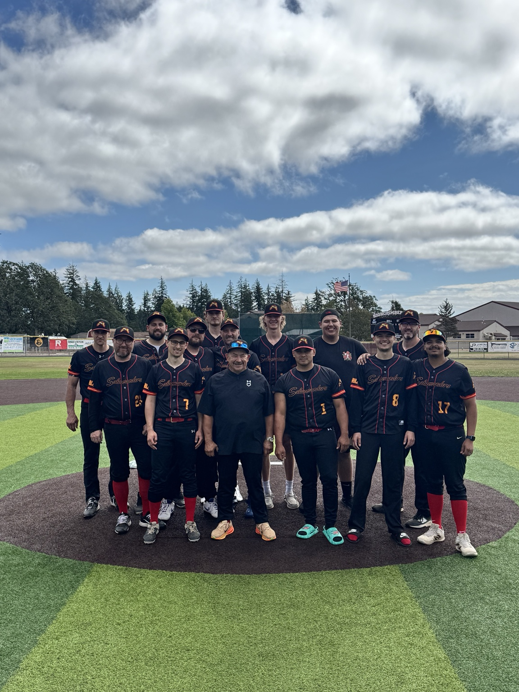

Fast Start
Opened the year 4–1 and established a more competitive identity early.

Competing in the Thurston County Adult Baseball League (TCABL), the Salamanders are building a team-first club players want to represent — on the field, in the clubhouse, and across Thurston County.

The Salamanders compete in the Thurston County Adult Baseball League and bring together players from across the South Sound who still love the game and want to compete the right way.
Our identity is built around accountability, communication, development, and enjoying the game with teammates who have each other’s backs.
We’re building something players want to be a part of.
— Coach FernandezFrom three wins in 2025 to 13 total wins in 2026 — a ten-win jump that changed the standard for the club. The Salamanders finished 11–9 in the regular season and 2–2 in the playoffs, for a 13–11 overall record.
Opened the year 4–1 and established a more competitive identity early.
Worked through a five-game skid without losing the group’s belief or direction.
Beat the Jalapeños, Pocket Gophers, and the top-seeded Gunners down the stretch.
Won the Wild Card game over the Monarchs and pushed the next playoff series to a deciding Game 3.
Explore the players, performances, and milestones behind the Salamanders.
27 hits, 25 runs, and a 2026 All-League First Team selection.
Explore team stats →Across the 2025 and 2026 regular seasons.
Open the record book →The newest Salamander joins the club for 2027.
Meet our newest additions →We’re looking for dependable players who love baseball, communicate well, and want to compete. Tryout and offseason information will be posted as the 2027 season gets closer.
Follow the official Salamanders Instagram for team announcements, recruiting updates, highlights and awards.